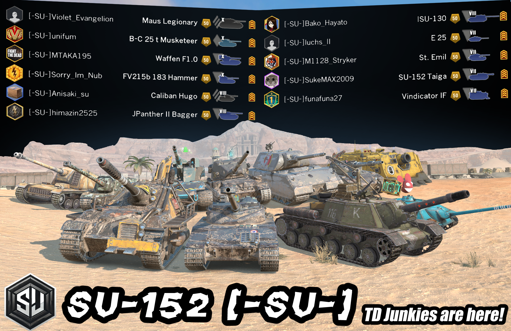
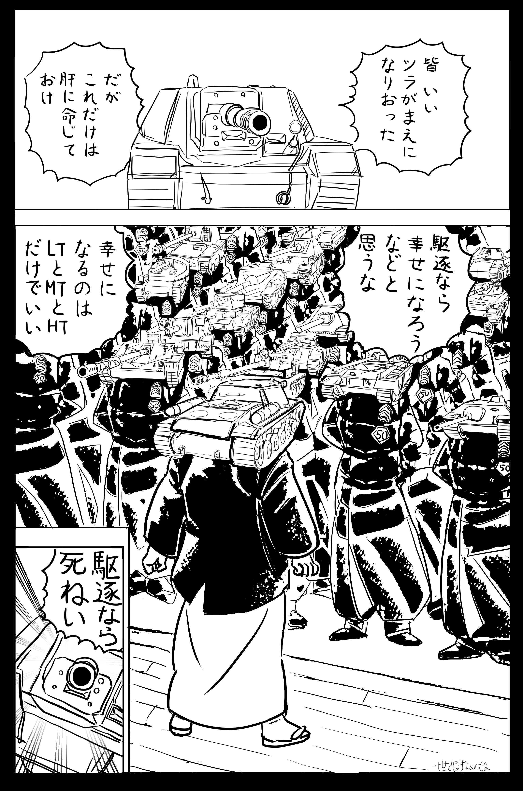
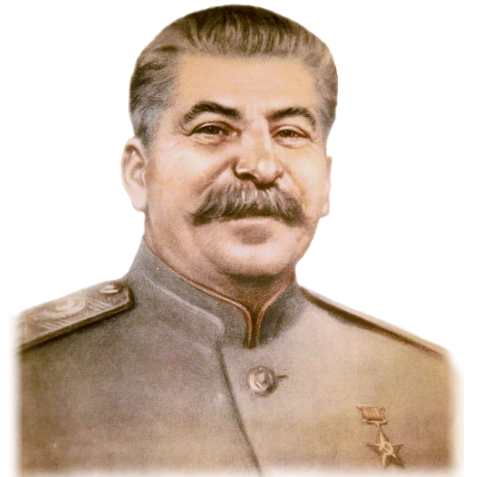
-SU-クランにようこそ！-SU-クランとは，世紀末_wotbによって創設された駆逐戦車を愛するプレイヤーが集うクランです．各々の愛車で Rank50の達成や，月間勝率・WN8の向上，優等マークの取得を目指しつつ「戦場における駆逐戦車のあり方」を日々探求しています．
我々はSmasherのような，誰もが認めるOP戦車には興味がありません．駆逐戦車に乗り，そうしたOP戦車を蹴散らすこと……これこそが私たちの美学です．この美学に共感する仲間をお待ちしております．-SU-クランblitzstars: https://www.blitzstars.com/clan/asia/107533
-SU-クラン & 視聴者交流Discord
-SU-クランでは，Discordにて交流サーバーを開放しています．
雑談や質問はもちろん，wotbの課金情報・ゲーム内最新情報，駆逐戦車に関する解説など，
世紀末_wotbのファンでなくとも楽しめる，居心地の良いサーバーです．
興味のある方は，ぜひ気軽にご参加下さい！
Rank上げ計算ツール
あとどれくらいでRank50に到達するのか...
終わりの見えない作業はしんどいですよね．
そこで-SU-が開発したのが，Rank上げ計算ツールです．
各ランクまでに必要な経験値などを計算してくれます．
ぜひご活用ください！
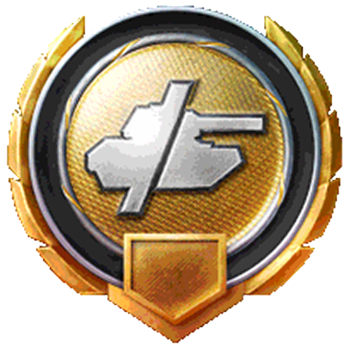
wotb Rank上げツール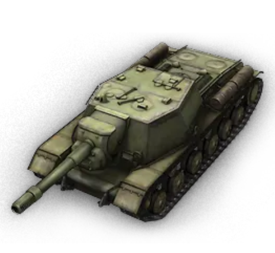
-SU-クラン 募集要項加入条件
- お気に入りのTier7以上の駆逐戦車(TD)が1両あり，その戦車だけで以下を満たしていること：
- ランク50を達成している
- 月間WN8：2850以上
- 月間WN8アジア10位以内
- 月間勝率：60%以上
- 優等マーク：
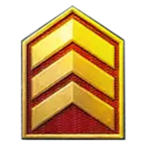
3優等以上
- 全体戦績として以下を満たしていること
- 月間勝率：60%以上
- 月間WN8：2450(Unicum)以上
- 戦闘数：5000戦以上
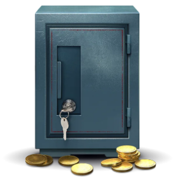
備考- ※以下の項目により，条件を満たしていなくても加入が認められる場合があります．
- -SU-メンバーから推薦があった時
- ランク50を達成していないが，達成する見込みがある時
- 愛車がTier7未満であっても，Tier7以上の戦績が十分に良い時
- 世紀末_wotbと交流があり，世紀末_wotbが「この人なら良いか」とやや偏った判断をした時
- あくまで条件は目安ですので，少しでも興味のある方はお気軽にご連絡ください．状況に応じて条件を緩和・免除する場合もございます．
- -SU-クランに入る為に駆逐に乗っている人よりも，元々駆逐が好きである人の方が好まれます．
福利厚生
-SU-クランメンバーは以下の恩恵を受けられます．
- -SU-メンバーとの個性的な小隊を楽しめる ※メンバーは皆勝率6割以上であるため，勝率が盛れます
- 別ゲー・受験などを理由とした休暇制度（無期限）
- 交流のあるクランへの転部サポート制度
- Discordにて，メンバーそれぞれに個性的なロールが付与

注意事項
- トーナメント参加やクランイベントは一切行っておりません．申し訳ございません．
- ウィークリークランミッションの達成率は低めです．クランミッション報酬には期待しないでください．
- 無断加入申請には対応していません．→ 必ず事前に世紀末_wotbに連絡をお願いします．
- SNSなどで迷惑行為・炎上行為が確認され，-SU-クランに風評被害が及んだ場合は除名処分となる場合があります
応募方法
以下のいずれかの方法で世紀末_wotbに連絡を取り，自由にご応募ください．
(推奨)Discordで応募
→ 世紀末_wotbのDiscordサーバー に参加し，フレンド追加後，DMにてメッセージを送信
X（旧Twitter）DMで応募
→ 世紀末_wotbのXアカウント にメッセージを送信
YouTubeで応募
→ 世紀末_wotbのYouTubeチャンネル の任意の動画や投稿のコメント欄にてメッセージを送信
-SU-クランメンバー紹介
|
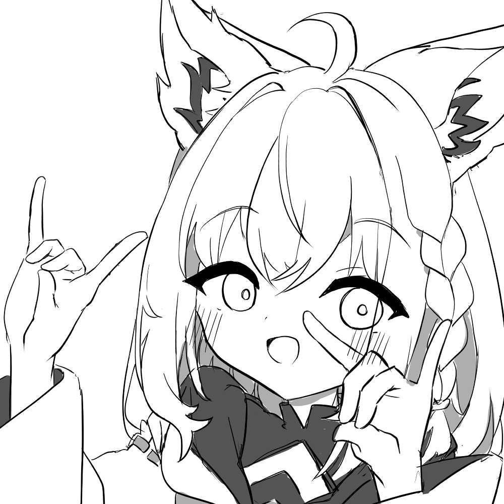 |
Bako_Hayato ISU-130 / SDP wz66 Grom すこん部．前線型駆逐が得意． しっかり絞らず弾を撃つため，世紀末に「(弾を)バコバコ外すハヤト」と呼ばれた事がIGN「バコハヤト」の由来...だったのだが，最近はGromというチート車両で敵装甲をバコバコ抜くようになった． そこで天狗になり，禁忌とされるSmasherに一度だけ乗ったところ，その試合に限って偶然世紀末とマッチングし，試合に勝ったのにも関わらず煽られ罵られ散々な結末を迎えた． |
|
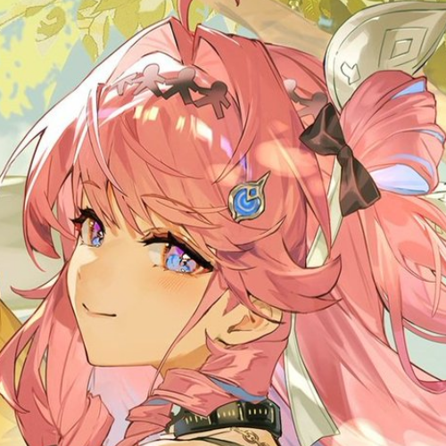 |
Nanancha CS-63 バコハヤトをトーナメントに誘ってお勉強会を開いたり，Discordサーバーに様々な人員を呼び込んだ功績が評価され，-SU-に加入した． バコハヤトに環境戦車をギフトすることが多々あり，そのことから「ハヤトの財布」というあだ名がついている． 重度の銀髪・桃髪好きで，該当の画像を送ると大体狂う(図1)．なお，バコハヤトはNananchaの言うことは素直に聞くので，重要な伝達はNananchaを通して行われる（世紀末氏の言葉には一切耳を傾けない）． |
|
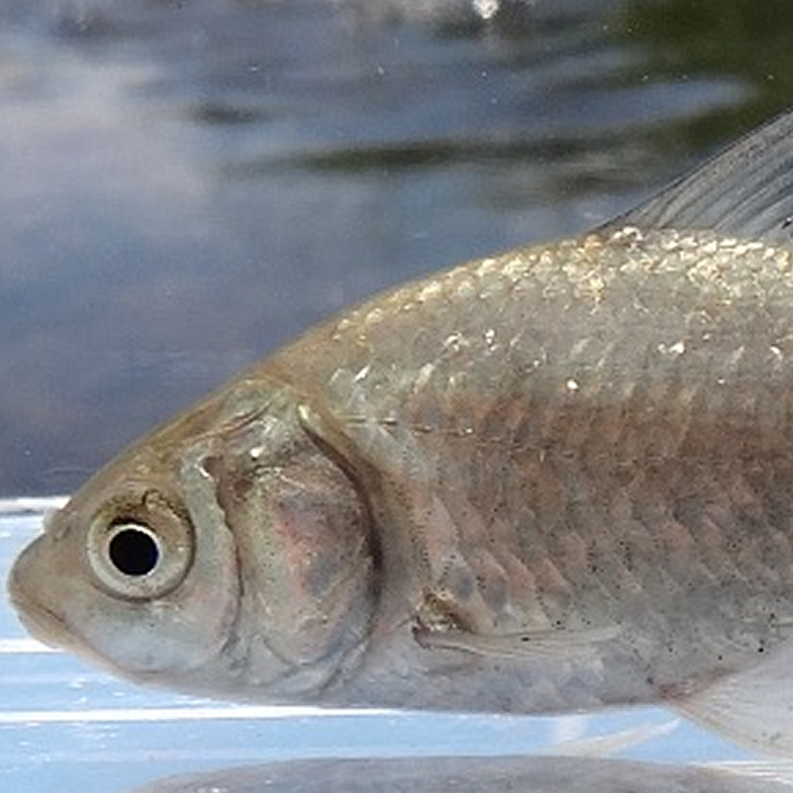 |
funafuna27 Vindicator Ultramarines 優しいお兄さんでもあり，俯角2度ブルドーザーお兄さんでもある． Feliceで三優等を取ったり，Minecraftで巨大な地上絵を作ったりするなど，凄まじい根性の持ち主． Tier10駆逐の殆どで三優等を保有しており，やはり凄まじい根性の持ち主．なぜフナのアイコンなのかは不明． |
|
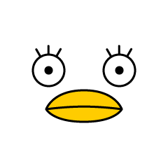 |
himazin2525 Jagdpanther II 通称「エリザベス」．VCでの生声が怖すぎるためヤクザベスとも呼ばれている． JagdpantherIIで平均ダメ3300を達成する化け物．しかしwotbに萎えるのが早く，連勝していても一日数試合プレイするのが限界で，「wotbは他人のプレイを見るのが一番楽しい」という神髄を既に理解している． 先日，息抜きで乗っていたKranvanで三優等を無意識に達成してしまい，腕を見込まれトーナメント参加を促されるも「めんどい」の一言で一蹴した． |
|
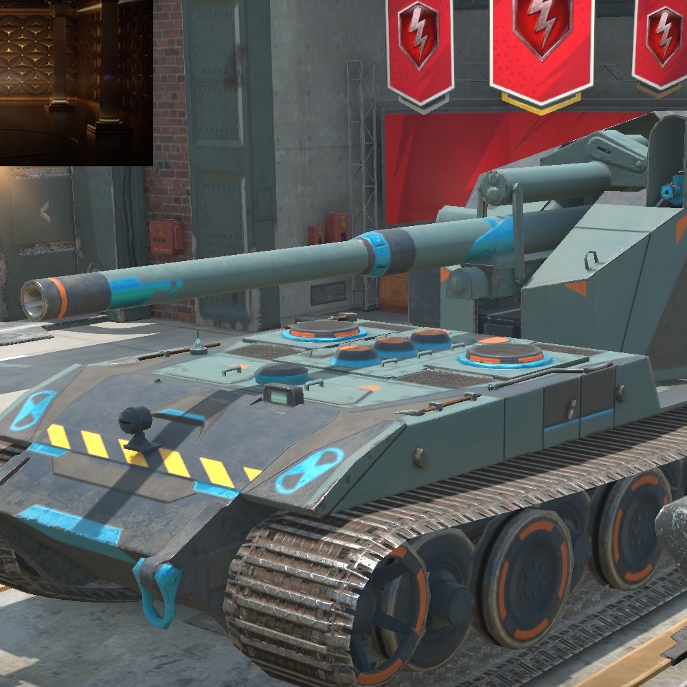 |
MTAKA195（Player_9957960738） SU-152 / Waffen 1.0 / T49 Fearless 味方運がなく「もーうんこー」と嘆く悲しきblitzer． エリザベスと小隊をし，二人でキレ散らかすのがクランの名物となっている．駆逐だけでなく他の車種も上手く面倒見も良いため，色々な人から小隊申請を受ける人気者． 数多くの車両で3優等を達成する根性の持ち主であるが，Waffen F1.0に関しては1000戦以上乗っても達成出来ず，クラメンから精神的健康状態を心配され，ようやく諦めた． ←遂に三優等を達成した．おめでとう！ |
|
HarrisonLSF Helsing 特に極めている駆逐は無いものの，4割時代の世紀末を支えた海外ニキとして加入． 何世代も前のMacbookを使っているが買い替える予定はなく，「パソコンが壊れたら引退するよbro」と宣言している香港人． 現在LTTBをRank50にしようと奮闘しているが，WGには1円も課金したくないらしく，5倍証券がお得に手に入る場合でも「陰謀だ」として払い退けた． |
|
|
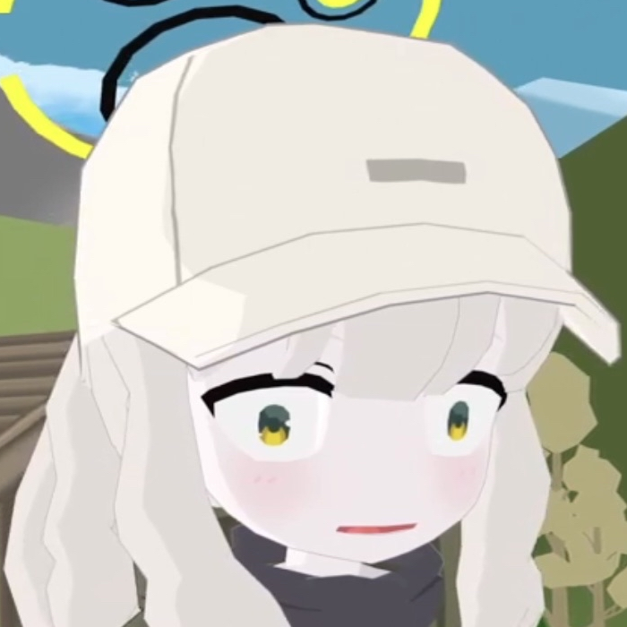 |
Zoleka_Miklos Silencer / GSOR1008 3優等が取れるまで止められないほどのwotb中毒者でもあり，-SU-加入基準を気合でクリアした苦労人でもある． 過去には連敗が続き，引退を考えるほど追い込まれていたが，世紀末氏に出会い，もっと駆逐を頑張りたいと思ったそう（本人談）． 最近よくあるbotに等しい初心者マッチに辟易しており，癒しを乞うように推しキャラのハレちゃんを愛でる． クールな一面があるのに，先生との会話で甘え気味なハレちゃんかわいい！！ |
|
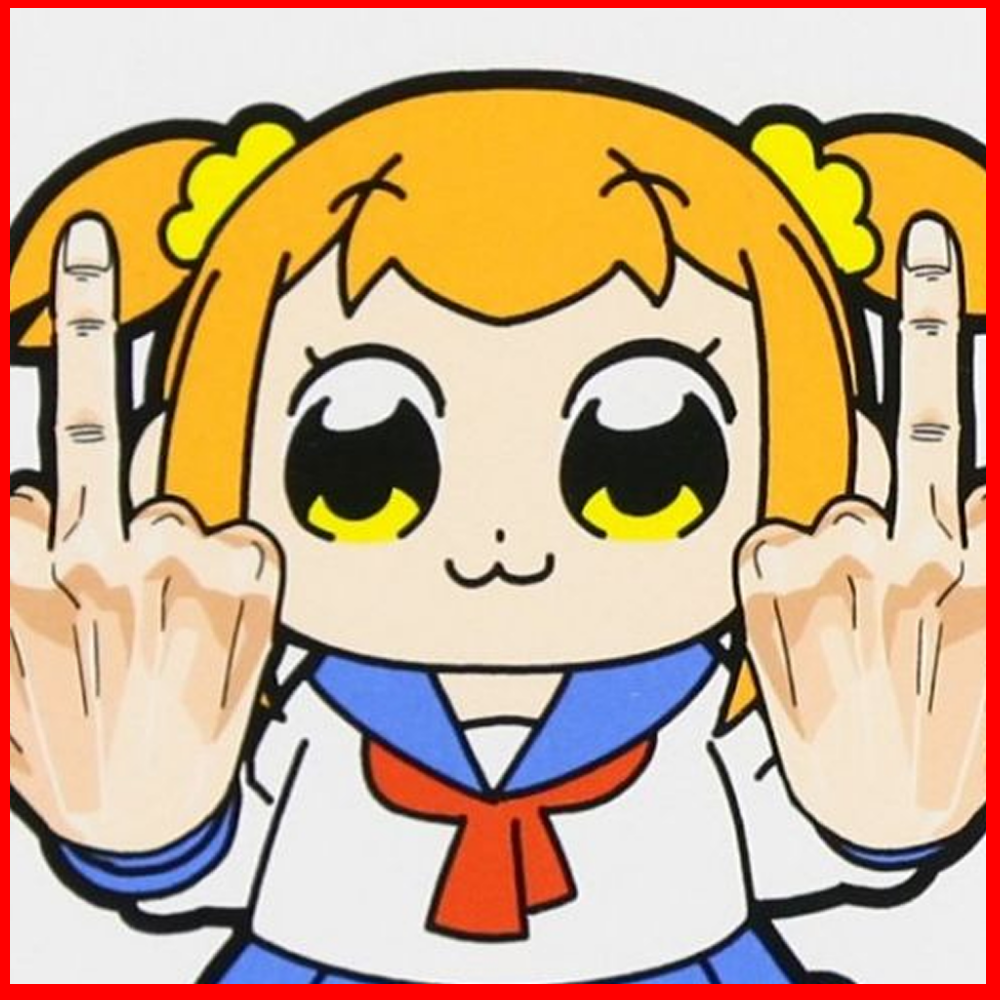 |
Violet_Evangelion FV215b(183) 通称「ポプ子」．Tier10で暴れ回り，トーナメントシーズンで出張するアクティブプレイヤー． 世紀末と元々同じクランだった事や，世紀末がポプ子にスナイプされたくない理由からクランに招待（クラン加入後も変わらずスナイプをする事があり，本人はプロスナイプ―と自称し，もはやスナイプを正当化している）． そんなポプ子だが，Obj.Kustの三優等に苦戦する世紀末に対し，指導を行ってくれる優しい一面も．しかし，声優である花澤香菜の話を振ると，セリフ詠唱が止まらなくなる...なにも終わっちゃいない！なにも終わっちゃいないんだ！！アタイにとって戦争は続いたままなんだ！自分の金で買った好きな洋服をdisられている！SNS上ではクソダサいだのみんな好き放題に言いやがる！あいつら、なんなんだ！！何も知らないくせに！！！ |
|
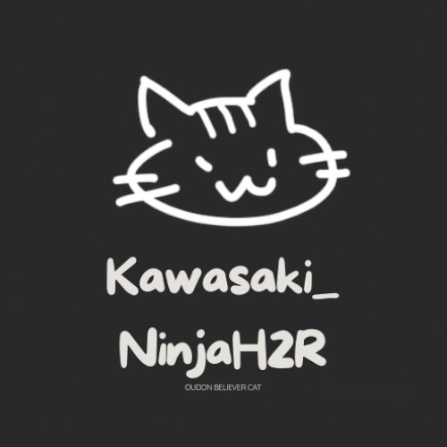 |
Kawasaki_NinjaH2R Type62 / Leopard 1 某トーナメントクランに所属していたが，低浮上により蹴られた所を世紀末にスカウトされ加入． 世紀末とは昔からTier7小隊で遊んでおり，LTMTHTTD何でも乗れる万能戦士．無類のバイク好きであり，名前の由来はおそらくカワサキモータース株式会社． 味方運のない可哀想なスマホ勢です。試合で会って負けてたら温かい目でお守りください（本人コメント）。 |
|
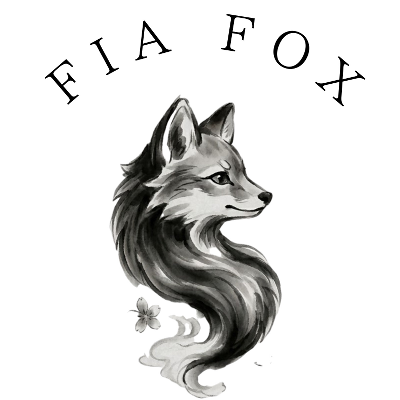 |
FiaGawainn FV4005 かつてアジアトップ入りを目指し，ポプ子・Kawasakiと共に戦ったプレイヤー． Kawasaki氏に掘り起こされたことや，過去世紀末氏と関わりがあったことから加入．blitzのお供にミルクティーを欠かさない紅茶の民にしてキツネが好き． 今日から久々にwotbの活動を再開しますと意気込んでいたが，加入した翌日から一度も浮上していない． |
|
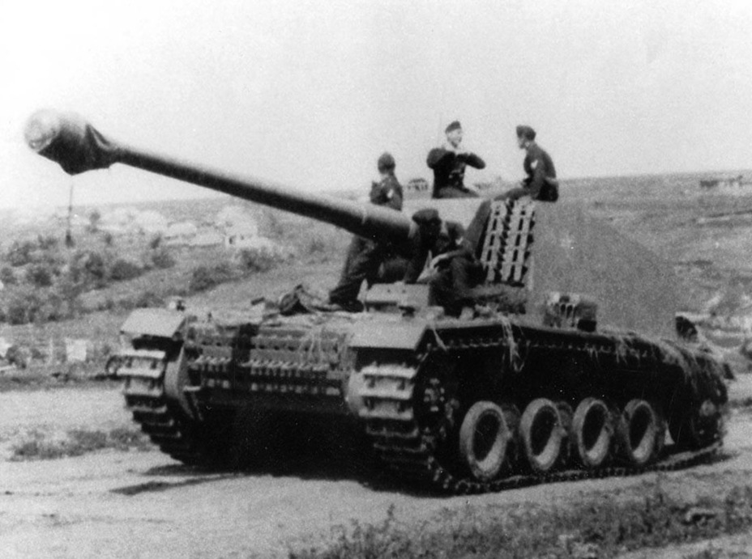 |
M1128_Stryker（DERUchan_tanker） St. Emil 3つのアカウント全てでSt.Emilランク50を達成し，かつアジアランキング1位〜3位を独占したSt.Emilの神． 単発が上振れると喜ぶが，下振れるとWGへの殺意を露わにする．本家WoTでもSt.Emilで3優等を保持しており，St.Emilの何が彼をここまでさせているのかは不明． Minecraftが大好きな脳筋作業厨であり，何かを建築するわけでもないのに広大な範囲を整地し，表面を全て石レンガで覆い尽くす． |
|
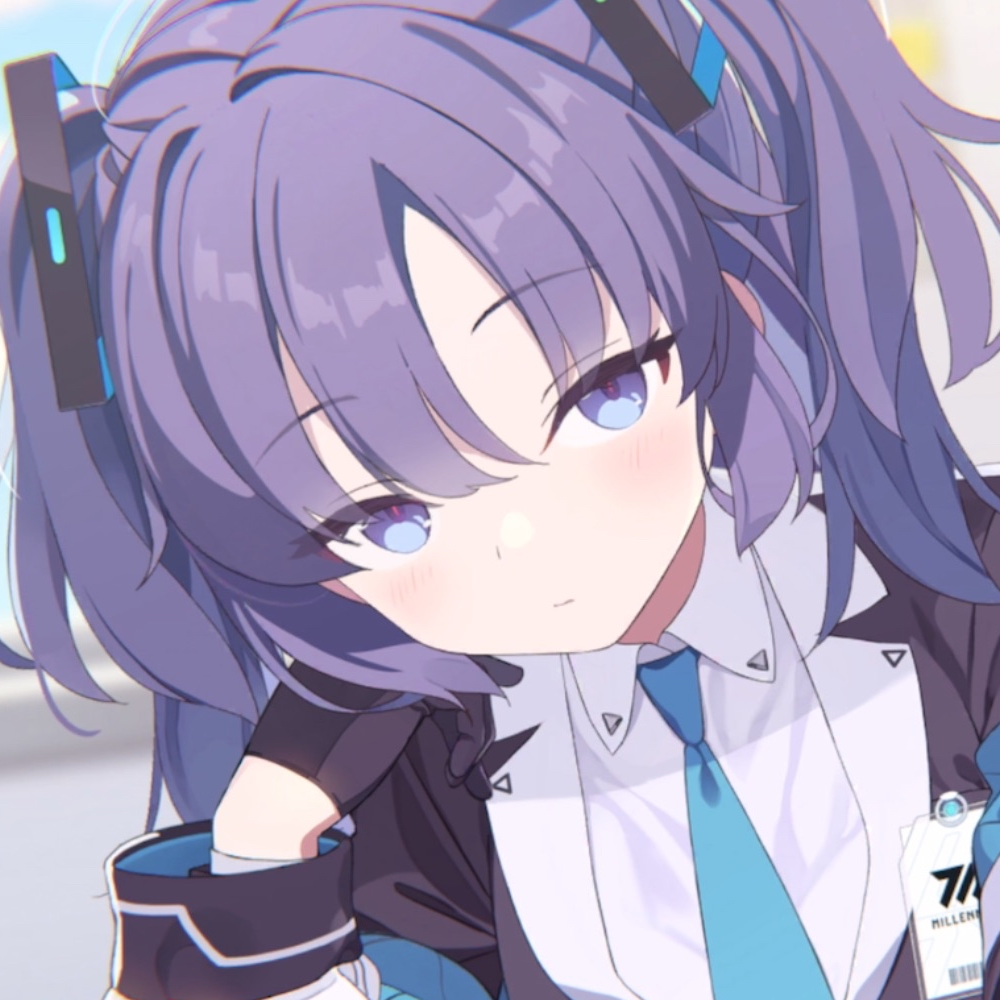 |
SukeM4X（SukeMAX2009） T30 / Kranvan 在籍していたクランから蹴られた所を「アイコンが可愛い」という理由で世紀末がスカウト． 読み上げbotの声も(なぜか)可愛いので，-SU-メンバーにも可愛がられている（Discord VCでほぼ毎日寝落ちしている姿も相まって）． "SukeMAX"という自分のIGNを「すけべまっくす」と自分からネタにしたため，他人からイジられても何も言い返せなくなってしまった． Kranvanで三優等を獲得し，HT乗りとして頑張っているが，53TPだけは何をどうしても扱えない模様． |
|
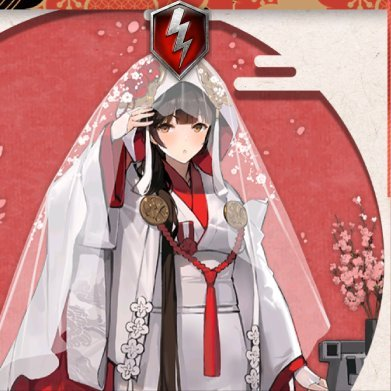 |
unifum B-C 25t / Swindler トーナメント勢．長らく活動していたクランが崩壊し，悲しみに暮れつつ身を寄せる場所として-SU-に加入． LT乗りであるが，破格の値段で落札したSDP wz 66 Gromにて平均ダメ 3k勝率80% ついでに3優等を達成してしまった． テスターとしての顔も持ち「Tier8で3k取れるGromはOPだけど調整前のObj.Kustには及ばない」などの名言を残している． 今季でトーナメント及びwotbを引退すると宣言していたが，例に漏れず僅か1か月あまりで復帰した． |
|
HAA_Br0Crusher2000 SU-152 海外ニキ．大学院生＆就活のため，最近は殆どログイン出来ていないが，実はクラン創設時から加入している古参勢． SU-152の他，Obj268やISU-152などソ連駆逐全般が好きな模様． |
|
|
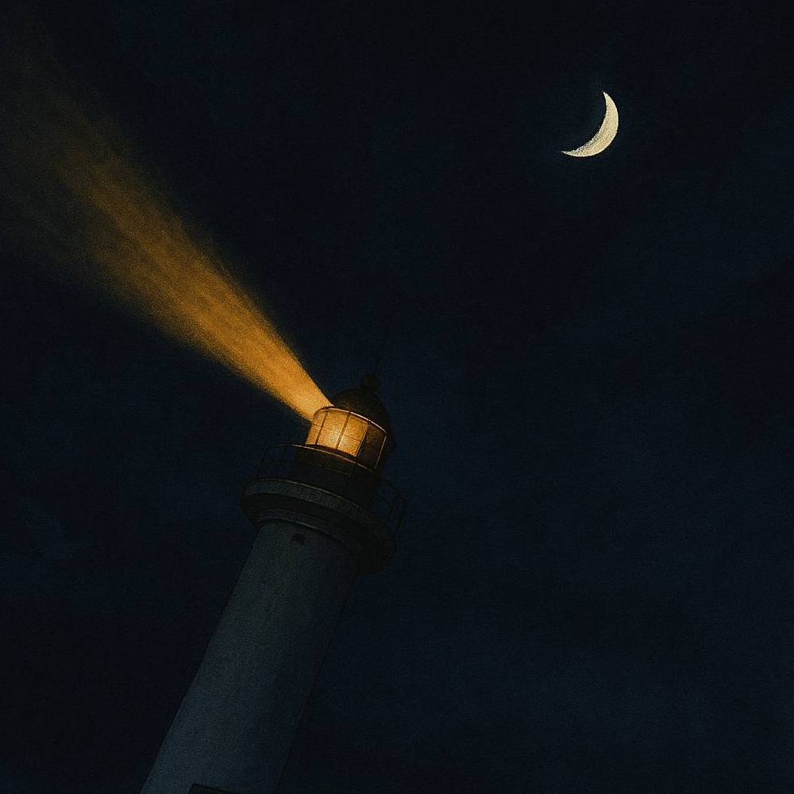 |
EtaDreamer ChiRi かつてはCATS所属のガチ勢だったが，大学生になってからはエンジョイ勢へ転向．とはいえKJPZ TIII Jagerを乗りこなすなど，現役時の腕は落ちていない模様． バイト代をwotbに課金し，きまぐれでギフトを送る．彼が送って来たギフトは必ず車両が出るという謎のジンクスがある．また，二か月に一度の頻度で隠居と活動を繰り返すため，毎回アップデート内容についていけない（二か月に一度の男というロールで弄られている）． |
|
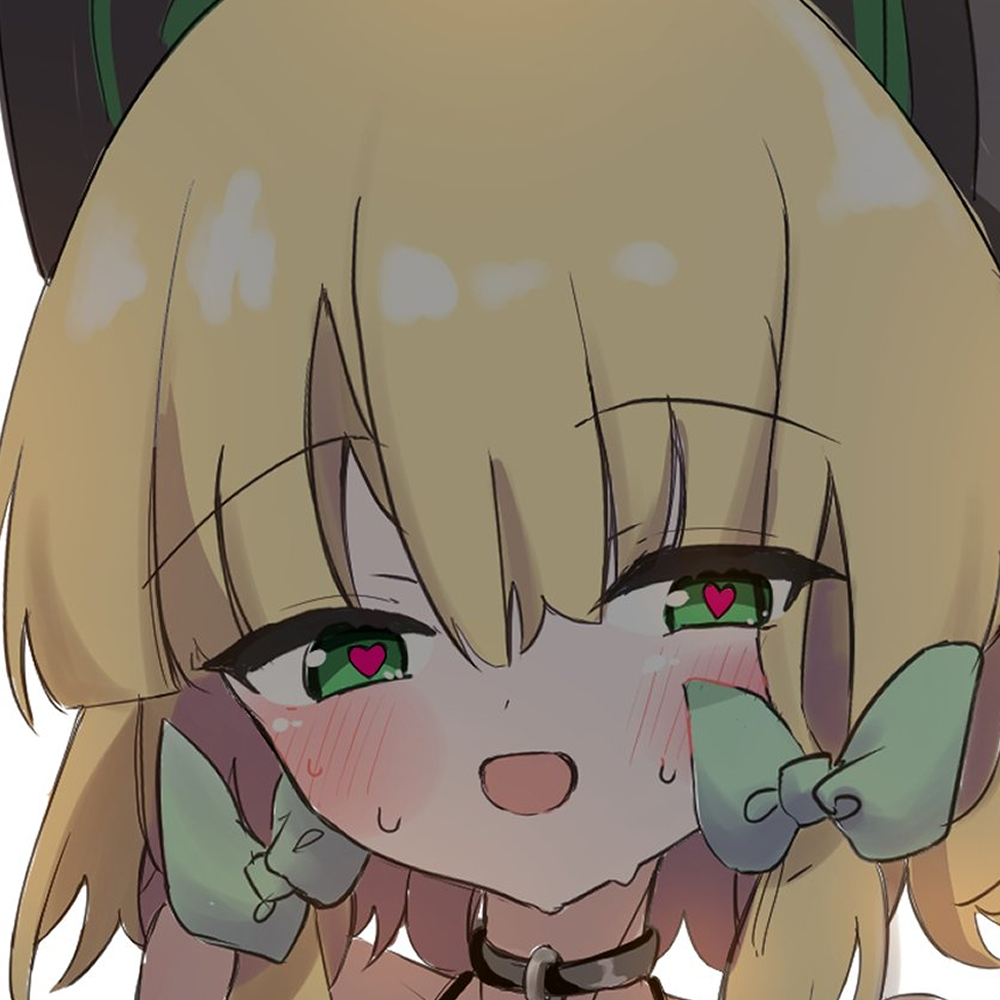 |
OODIN_iron Object 263 DAZEさんと呼ばれている若きメンバー． なぜかアカウントにログイン出来なくなり数か月隠居したり，家のルーターが壊れるも発注を忘れ1-2か月インターネットが繋がらないなどの紆余曲折がありつつも，突然復帰． しかしその直後，VRChatというメンヘラホモボーイの奥地へ旅立ち，以降Discordで見かけた者はいない． 最近，可愛い女の子のアバターを購入したとの事．順調にメス堕ちしているようである． |
|
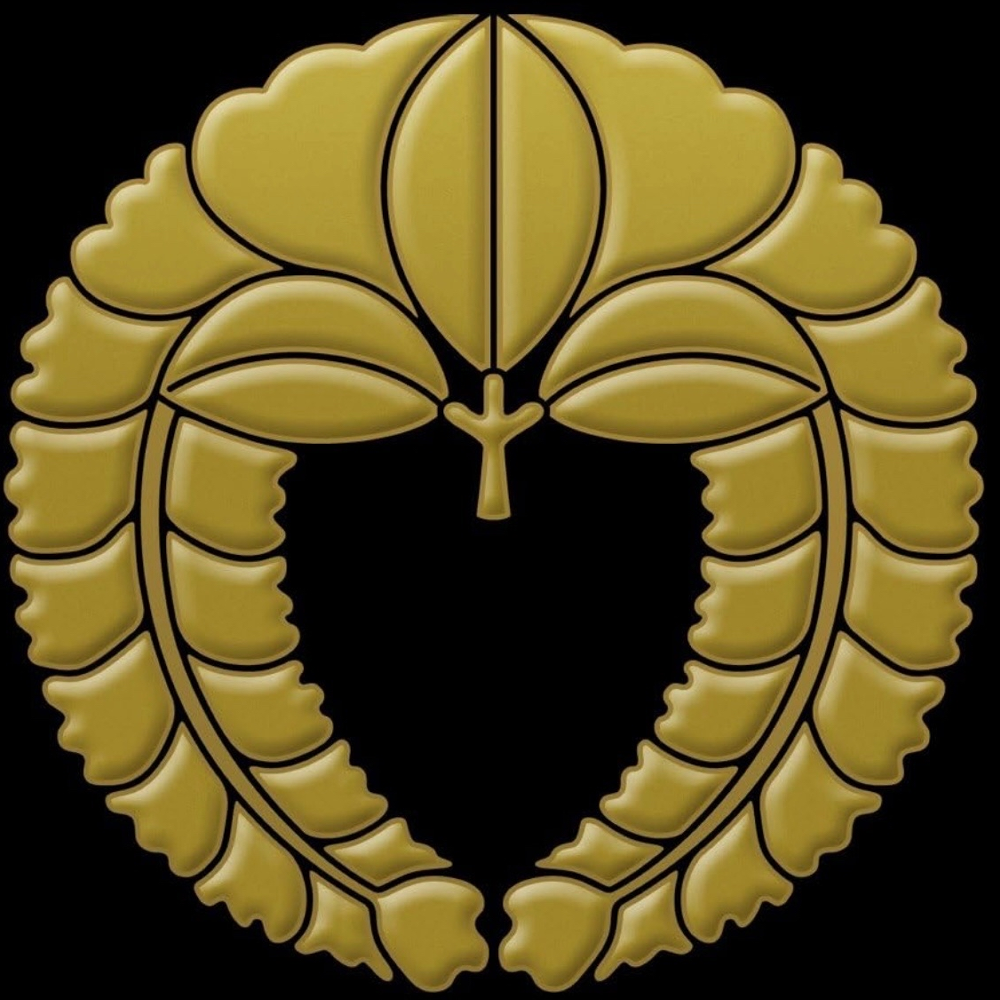 |
SU_152_only SU-152 名の通りSU-152にしか乗らない（ISU-152にもちゃっかり乗る）プレイヤー．実はクラン最年長であり，クランを温かく見守る存在である． |
|
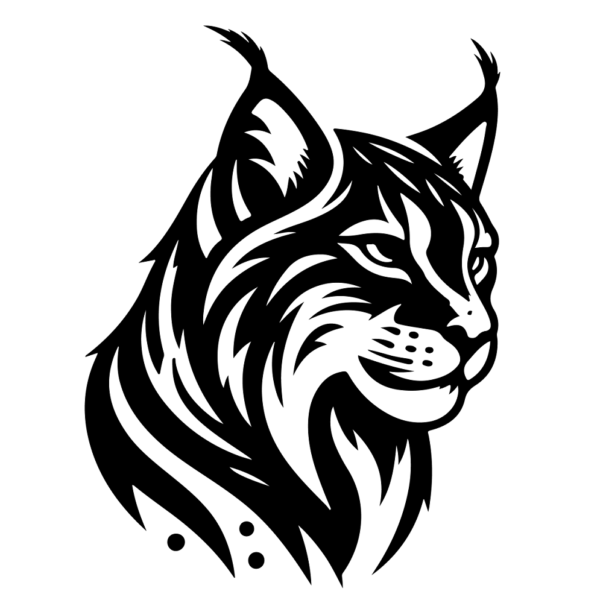 |
luchs_II E25 / ELC AMX-901 E25の達人． 多目的レストアパック以外の2つの消耗品枠を「改エンブ」「通常エンブ」で固め，更に常備品も燃料2つ搭載するダブルエンブ教団の祖． 軽戦車での経験に加え，各マップの特殊ポジを研究し尽くしており，唯一無二の立ち回りを実現する． 冬のオークションで夢にまで見た全周砲塔ELC「ELC AMX-901」を落札し，フルヘルスの重戦車をひたすら食い潰し，気持ち良くなっている． 正直アドレナリンやタングステンを差し置いて，普通エンブを積むメリットはないだろう．これは消耗品を積んでいるわけではない．LT乗りとしての覚悟と意思表明である．つまり思想を積んでいるのだ．※E25のRank上げに必要なバッジや経験値を達成しているが，本人は試合が始まる前にRank50という情報を与えたくないため，Rank2で止めている．写真撮影時には，この理念を鑑みRank50を合成している． ※実は「戦車をトレモで吹っ飛ばすバグ」が本職． Youtube |
|
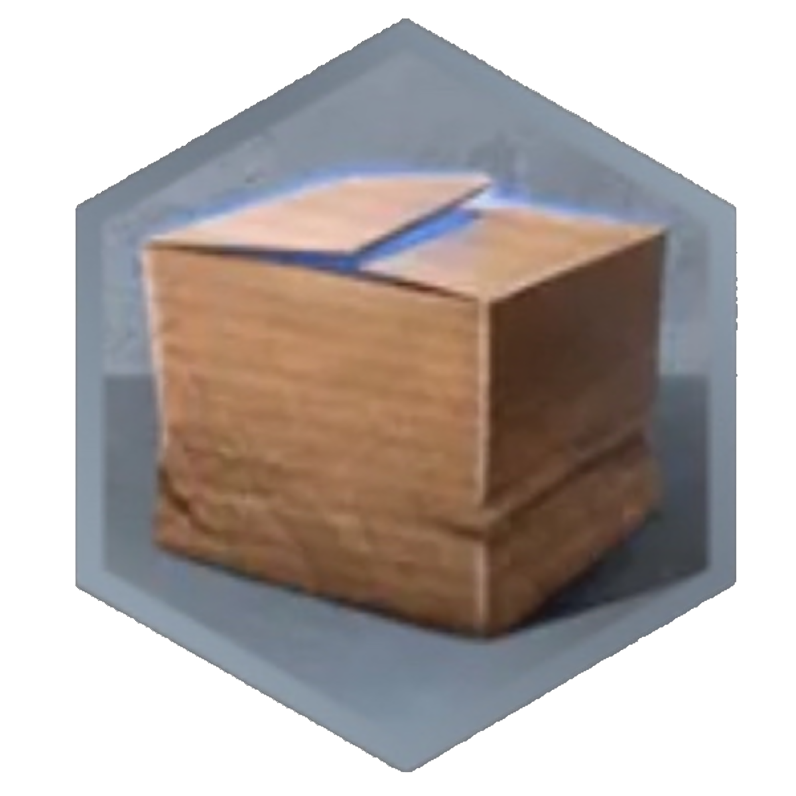 |
Anisaki_su SU-152 / T25/2 / Caliban / Type62 若手YouTuber．wotbのセンスが抜群で，アジアランク1位を次々と奪取した怪物新人．なんと月2000戦プレイしており，一体何がどうなっているのか本当に分からない． クランに入る前はWN8: 2100程度であったが，現在はなんと3600である．最近はType62にハマっており，その腕前は到底1万戦プレイヤーとは思えない． Calibanを「快感も得られるし精神とプレイスキルも磨ける最高の戦車」と評価していたが，翌日に撤回した． Youtube ※現在は私用により，Wotb及びYoutubeの活動を休止中． |
|
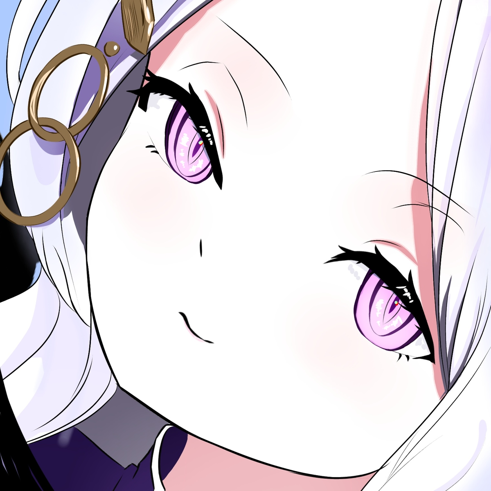 |
11haguki SU-152 / Kanonenjagdpanzer 105 / ISU-130 ブルーアーカイブの絵を描く合間にwotbをプレイする絵師さん． 萌え系というよりクール系の絵柄が特徴で，難しい構図も描きこなし，-SU-集合写真の制作にも大きく貢献した． 超がつく程の深夜勢であり，深夜作業と称して一緒に夜更かしした際には，朝6時半まで作業を続け，世紀末が先に寝落ちして敗北した． -SU-クランに入った理由は，世紀末がブルアカ好きであったからとのこと（とてもかわいい理由で嬉しい）．X (Twitter) |
|
Sorry_Im_Nub SU-152 / E25 / AMX CDA 105 / GSOR1008 / Obj.Kust / FV215b(183) 世紀末_wotb. 駆逐狂いが集うクランを作りたい思いから -SU- を創設した全ての元凶． 大学院生になり多忙を極め，現在はDTH-STRとJi-Roのランク上げを細々と続けている（ただしランク上げツールを作る余裕はある模様）． 理想通りのクランが出来て満足しているが，唯一の気がかりは，メンバーから「SU-152の人」ではなく「ロリコン淫夢厨」と認知されている事である |
|
|
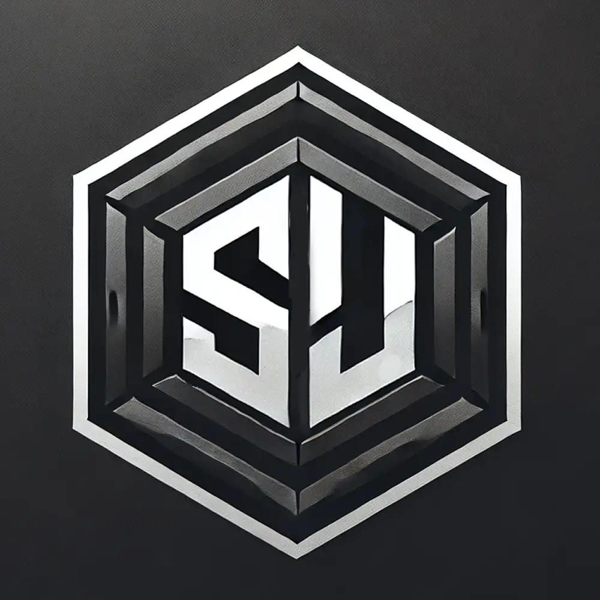 |
FK_Smasher SU-152 クランマスター．-SU- に鎮座しながら，新たな駆逐狂いの加入申請を心待ちにしている． OPに乗ってばかりの野郎共を駆逐するという，クランの理念を表したようなIGNである． |
ギャラリー
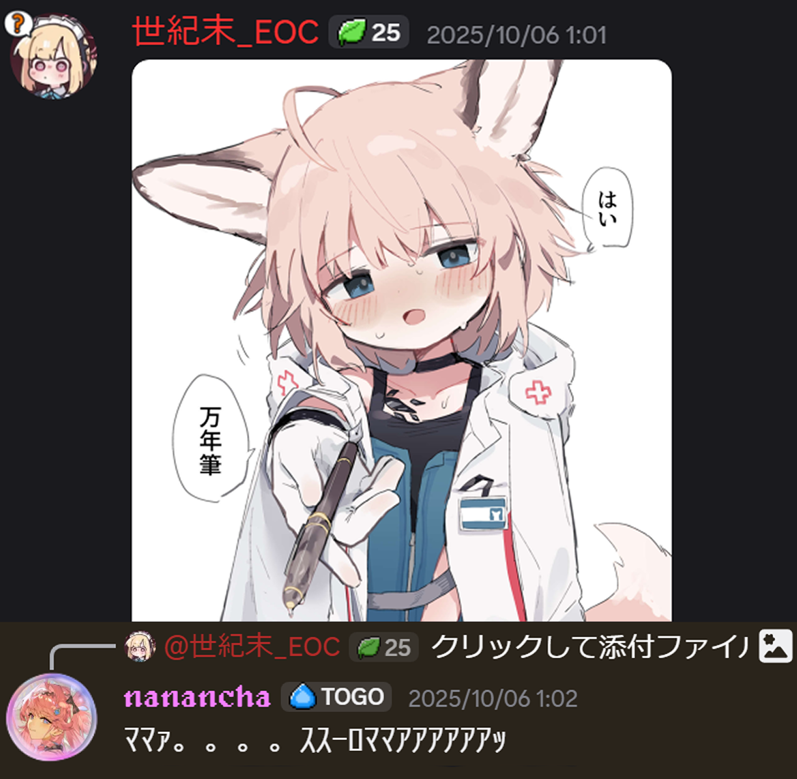
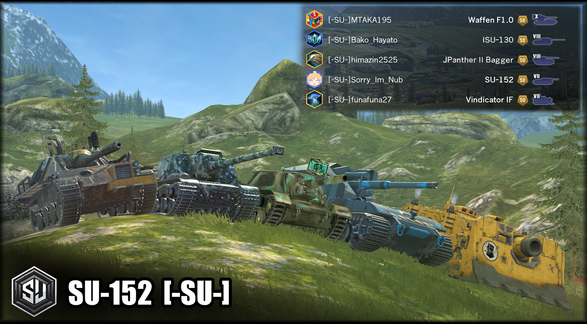

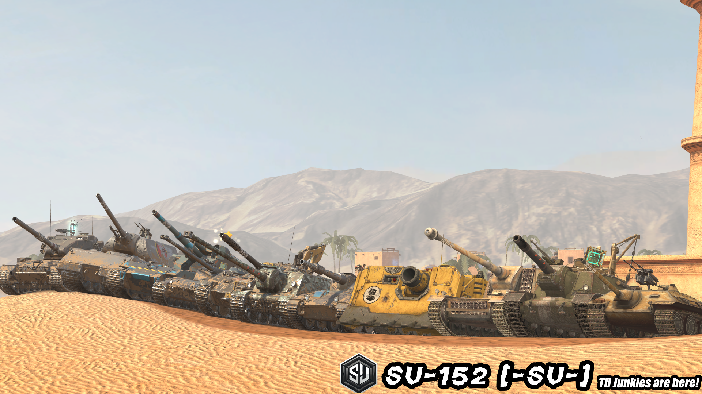
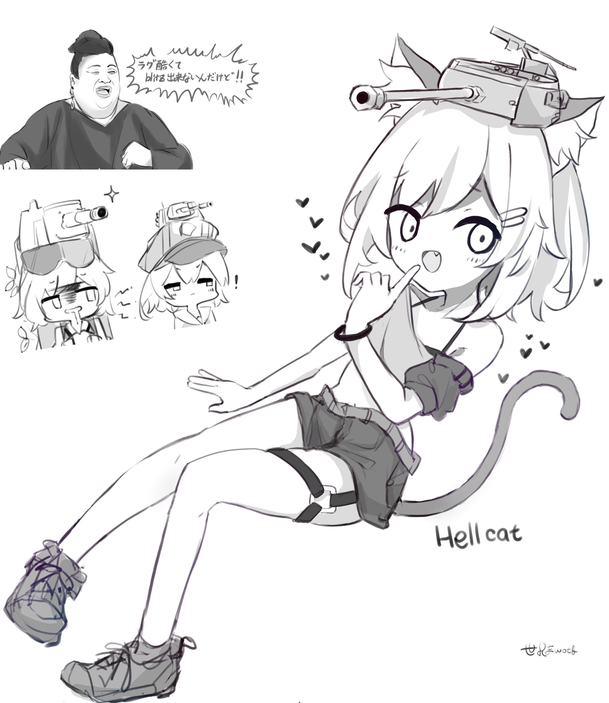